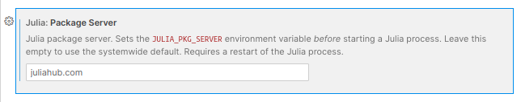

Authentication
In order to talk to a JuliaHub instance, you must authenticate with your user account, and have an authentication token. JuliaHub.jl aims to make it as easy and painless as possible to manage your authentication tokens.
Overview
To use this package to authenticate in your current Julia session, you can call the authenticate function. It will return an Authentication object, containing the token.
In principle, nearly every function here takes an (optional) auth keyword argument, that should be passed an Authentication object. However, this is usually not needed in practice, since JuliaHub.jl remembers your last authentication, and uses that as the default value for auth. Additionally, if there is no active authentication, calling any function that requires authentication will try to automatically authenticate (and may also trigger an interactive authentication). You can access the currently active authentication object with current_authentication.
In order for authenticate to work, you must specify which JuliaHub instance to authenticate against (e.g. juliahub.com). There are two options for this:
- You can configure the Julia package server to point to the JuliaHub instance by explicitly setting the
JULIA_PKG_SERVERenvironment variable. See Local environments below to for more information on how to do it in local environments. In JuliaHub jobs, however, it is automatically set. - You can directly pass the JuliaHub instance URL to
authenticate, e.g.JuliaHub.authenticate("juliahub.com").
If a valid token for the JuliaHub instance exists on the disk, authenticate will use that directly. Otherwise it will attempt an interactive, browser-based authentication against the Julia instance. For the latter, under the hood, it uses the PkgAuthentication package to perform the interactive authentication
JuliaHub (or, more generally, package server) tokens are stored in the ~/.julia/servers/ directory. Inspecting the auth.toml files, or deleting them and re-authenticating may help if you are having unexpected issues with authentication.
Note that this applies mainly when running JuliaHub.jl on your local computer. In JuliaHub cloud IDEs and jobs, the authentication token is actively managed by JuliaHub, and tampering with it may lead to other issues.
JuliaHub cloud environments
When working with JuliaHub.jl in JuliaHub cloud environment, such as in JuliaHub Cloud IDEs or in JuliaHub jobs, you generally do not have to worry about authentication. The JULIA_PKG_SERVER should always be correctly set up, and the auth.toml file will also be present and up-to-date. This means that authenticate should automatically be able to authenticate your session, and you should never be prompted for interactive authentication.
As in a JuliaHub environment everything is already set up and pointing to the correct server, you do not need to call authenticate yourself, nor set up JULIA_PKG_SERVER. You should be able to start using JuliaHub.jl functions right away.
However, in JuliaHub jobs, you may still want to log the Authentication object in the job logs. You can use something like this at the top of your script:
@info "JuliaHub authentication token" JuliaHub.authenticate()Local environments
When using JuliaHub.jl outside of JuliaHub (e.g. on your local laptop), you must explicitly configure the Julia package server, or pass the JuliaHub URL to authenticate.
The Julia package server can be configured via the JULIA_PKG_SERVER environment variable, and there are a few options for this. In a live Julia session, you can simply set it via ENV, e.g.
ENV["JULIA_PKG_SERVER"] = "juliahub.com"You can also do it this way in the Julia startup.jl script.
Alternatively, on an UNIX-y system, you can set it in the shell or a script with e.g.
export JULIA_PKG_SERVER=juliahub.comIf you're exclusively using the VS Code editor with the Julia extension, you can configure the package server in the UI directly, and it will apply to any REPLs you open in VS Code.

When running JuliaHub.jl on your local computer for the first time, or when you have not used JuliaHub.jl in a while, you will likely see something like:
julia> using JuliaHub
julia> JuliaHub.authenticate()
Authentication required: please authenticate in browser.
The authentication page should open in your browser automatically, but you may need to switch to the opened window or tab. If the authentication page is not automatically opened, you can authenticate by manually opening the following URL: ...Once you perform the browser-based authentication, the local auth.toml file gets updated, and JuliaHub.jl will be able to talk to the JuliaHub instance.
Setting JULIA_PKG_SERVER will also make the Julia package manager operations use the JuliaHub instance for Pkg operations. This is necessary for accessing packages on the private registries only accessible via JuliaHub. But it also means that you must have a valid JuliaHub authentication token in order to pull packages from the General registry.
Enterprise users generally have their own JuliaHub instance hosted under a different domain. In those cases, the recommended workflow is to globally set the JULIA_PKG_SERVER variable to point to the enterprise instance. This has the following benefits:
JuliaHub.jl will, by default, authenticate with the server defined by
JULIA_PKG_SERVER, opening a browser window if needed to acquire the token.All package manager operations (i.e.
pkg>orPkg.*) will be routed through your enterprise JuliaHub instances as well. This is most useful if you need access to packages that are available in your company's private registries.
Note: the same authentication token is used for package operations and JuliaHub operations.